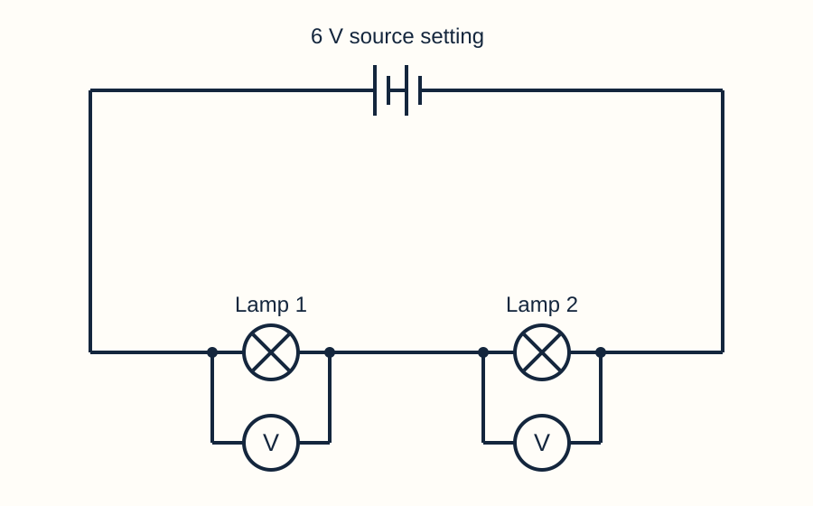
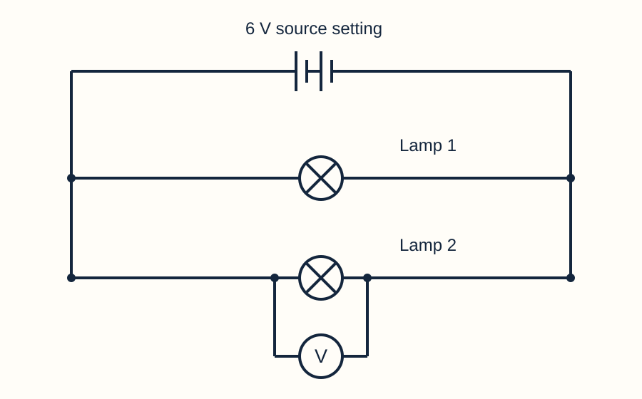

Draw in your book or this printed space. You may also use the simulator symbol view, save your circuit and explain the connections, or direct a scribe.
State the unit of current and draw its meter symbol.
Model answer & mark scheme
Current is measured in amperes (A); the ammeter symbol is a circle containing A.
Success criteria: Correct unit and symbol.
One acceptable schematic; component positions may differ if the connections match.
A 0.70 A supply feeds two branches. One carries 0.25 A. Find the other.
Model answer & mark scheme
0.70 − 0.25 = 0.45 A.
Success criteria: Subtraction with A.
Predict whether two identical series lamps each get the full source voltage.
Model answer & mark scheme
Prediction: no; the source voltage is shared between them. The measurement will test this.
Success criteria: A prediction with a reason. Revisit it after the experiment.
Support and a way to start
Recall amperes and A.
Subtract one branch current from the total.
Make a voltage prediction to test later.
I predict ___ because ___. I will check by ___.
Use the symbol reference, large symbols or a pupil-directed scribe. A clear connection matters more than a perfectly straight line.
Predict
State what you expect before testing.
Stretch & challenge
Why should a current result not simply be copied into a voltage column?
Model answer & success criteria
Current and voltage measure different quantities and use different units. Current is charge flow rate; voltage is energy transferred per unit charge.
Success: a clear judgement supported by the relevant circuit path, model or measured evidence.
2. Today: measure energy per charge
Read the goals. Choose what your evidence must include.
LO1 · Describe potential difference as energy transferred per unit charge, measured in volts.
LO2 · Connect and draw a voltmeter across the two points being compared.
LO3 · Use measurements to explain and apply series and parallel voltage rules.
What evidence would show both correct meter use and the voltage pattern?
Model answer & mark scheme
Correctly connected voltmeter diagrams plus readings across the source terminals and each lamp in both arrangements.
Success criteria: A method/diagram and comparative readings, not a numerical answer alone.
Support and a way to start
Find the word voltmeter.
Find compare.
Name a drawing and a set of readings you need.
I will show ___ by recording/drawing ___.
Rehearse aloud. Point to the diagram or direct a partner to record your words. Keep the same scientific explanation.
Potential difference
Energy transferred per unit charge between two points.
Stretch & challenge
Why are measurements at only one point insufficient for potential difference?
Model answer & success criteria
Potential difference compares two points. A voltmeter must connect to both points to measure the energy transferred per unit charge between them.
Success: a clear judgement supported by the relevant circuit path, model or measured evidence.
3. Voltage compares two points
Explain what one voltage reading means.
Potential difference, or voltage, is energy transferred per unit charge between two points.
Charge is measured in coulombs (C). A volt is one joule per coulomb: 1 V = 1 J/C.
A 3 V drop across a lamp means it transfers 3 joules for each coulomb passing through. Charge is not used up.
What does 4 V across a lamp mean?
Model answer & mark scheme
The lamp transfers 4 joules of energy for each coulomb of charge passing through it.
Success criteria: Energy per unit charge, with joules and coulombs.
How does voltage differ from current?
Model answer & mark scheme
Voltage is energy transferred per unit charge between points, measured in V. Current is the rate of charge flow, measured in A.
Success criteria: Both meanings and units.
Support and a way to start
Read “per” as “for each”.
Replace 4 V with 4 J for each C.
Contrast energy per charge with flow per second.
A reading of ___ V means ___ joules for each coulomb.
Rehearse aloud. Point to the diagram or direct a partner to record your words. Keep the same scientific explanation.
Joule (J)
Unit of energy.
Coulomb (C)
Unit of charge.
Volt (V)
One joule per coulomb.
Stretch & challenge
Two lamps each have 3 V across them. Must they have the same current?
Model answer & success criteria
No. The current also depends on resistance. The same potential difference can drive different currents through different resistances.
Success: a clear judgement supported by the relevant circuit path, model or measured evidence.
4. Put the voltmeter across
Watch the connections. Then draw your meter position.
Keep the lamp connected in the main circuit. Add a voltmeter in parallel across its two terminals.
To measure the source, connect across the battery terminals. Then measure each lamp the same way.
In Circuit Lab, use meter magnitudes for this comparison. Reversing the meter connections changes the sign.
Draw in your book or this printed space. You may also use the simulator symbol view, save your circuit and explain the connections, or direct a scribe.
Draw a voltmeter across a lamp without breaking the lamp path.
Model answer & mark scheme
A circle containing V on a separate measuring branch; one lead goes to each lamp terminal, while the original lamp path stays connected.
Success criteria: Correct V symbol, two distinct terminals, intact lamp path.
One acceptable schematic; component positions may differ if the connections match.
What if both voltmeter leads touch the same terminal?
Model answer & mark scheme
The potential difference between that point and itself is 0 V. It is not a measurement across the lamp.
Success criteria: 0 V and same-point explanation.
Support and a way to start
Find the two lamp terminals.
Keep both original lamp connections.
Connect one voltmeter lead to each terminal.
The voltmeter compares ___ with ___.
Choose builder, connection director or recorder. Use the starter circuit if needed. Read one value at a time; a partner may type your dictated values.
Across
Between the two terminals of a component.
Parallel connection
A separate branch across the same two points.
Stretch & challenge
Why does inserting a voltmeter instead of a wire stop current in this simulator?
Model answer & success criteria
The model voltmeter has infinite resistance and carries no current. Inserting it in the main path opens that path. It must be connected across the points while leaving the main path intact.
Success: a clear judgement supported by the relevant circuit path, model or measured evidence.
5. Predict before measuring
Write a prediction for each arrangement.
Series: each coulomb passes through both lamps. Their energy transfers add, so their voltage drops add.
Parallel: each branch spans the same pair of supply sides. Each branch has approximately the supply terminal voltage.
Ideal prediction for a 6 V supply and two identical lamps: series ≈3 V each; parallel ≈6 V each.
Why is the series prediction 3 V per identical lamp, rather than 6 V per lamp?
Model answer & mark scheme
The two equal-resistance lamps share the energy transferred per coulomb. Their voltage drops add to the supply voltage, so ideally 3 + 3 = 6 V.
Success criteria: Energy-per-charge reasoning and equal components.
Why is the parallel prediction different?
Model answer & mark scheme
Each lamp branch connects across the same two supply sides, so each has the whole supply potential difference rather than sharing it along one lamp path.
Success criteria: Same pair of points, not “voltage is split at the junction”.
Support and a way to start
Start from the ideal 6 V supply.
For series, share between two equal lamps.
For parallel, compare each branch’s endpoints.
In ___, each lamp has about ___ V because ___.
Rehearse aloud. Point to the diagram or direct a partner to record your words. Keep the same scientific explanation.
Voltage drop
Potential difference across a component transferring energy.
Stretch & challenge
Must all series components share the voltage equally?
Model answer & success criteria
No. Their voltage drops add to the supply voltage, but equal sharing applies only to equal resistances in this steady model. A larger resistance has a larger drop at the same series current.
Success: a clear judgement supported by the relevant circuit path, model or measured evidence.
6. Measure three voltages: series
Use the voltage investigation sheet. Record your own values.
Use the Series circuit example at 6 V with two 10 Ω lamps; keep its switch closed.
Add voltmeters across the source terminals, lamp 1 and lamp 2. Record each magnitude in V.
Add the two lamp readings. Compare the sum with the source-terminal reading.

What pattern do your series readings show?
Model answer & mark scheme
For the example circuit: source terminals ≈5.97 V; lamp 1 ≈2.98 V and lamp 2 ≈2.98 V (about 2.9843 V each before rounding). The lamp drops approximately add to the measured supply-terminal voltage.
Success criteria: Three labelled readings in V, correct sum and approximately-equal comparison.
Why use a voltmeter across the source rather than copying the 6 V setting?
Model answer & mark scheme
The setting is the source emf in the model. Internal resistance causes a voltage drop when current flows, so the terminal voltage is slightly lower.
Success criteria: Distinguish source setting from measured terminal voltage.
Support and a way to start
Use the starter with three meters if needed.
Read supply, lamp 1, lamp 2 in that order.
Add the two lamp values.
___ V + ___ V ≈ ___ V. This shows ___.
Choose builder, connection director or recorder. Use the starter circuit if needed. Read one value at a time; a partner may type your dictated values.
Terminal voltage
Measured voltage between the source terminals.
≈
Approximately equal to.
Stretch & challenge
Does a tiny difference between the sum and the source reading automatically disprove the rule?
Model answer & success criteria
No. Rounded display readings and small voltage drops in leads or the closed switch can account for the difference. The sum around the full loop includes all those drops.
Success: a clear judgement supported by the relevant circuit path, model or measured evidence.
7. Repeat the comparison: parallel
Change the arrangement. Keep the component values fixed.
Choose the Parallel circuit example with 6 V and two 10 Ω lamps. Keep the supply switch closed.
Measure across the source terminals and across each lamp. Record three magnitudes.
Compare each lamp with the source. Do not add the lamp readings as though they were in one path.

What pattern do your parallel readings show?
Model answer & mark scheme
Typical values: source terminals ≈5.88 V and each lamp ≈5.88 V. Each lamp is approximately at the measured supply voltage. The two lamp drops are not added because they are on separate paths.
Success criteria: Three values/units; each branch compared with supply; separate paths explained.
Why is 5.88 V different from the 6 V source setting?
Model answer & mark scheme
The source has internal resistance. The current produces an internal voltage loss, leaving a smaller terminal potential difference; wires add small external losses.
Success criteria: Use the measured terminal value and the model’s assumptions.
Support and a way to start
Load parallel after saving the series reading.
Check each meter spans the right two terminals.
Compare each lamp with the supply.
Lamp ___ has ___ V, which is approximately ___ because ___.
Choose builder, connection director or recorder. Use the starter circuit if needed. Read one value at a time; a partner may type your dictated values.
Same endpoints
Connected across the same two supply sides.
Stretch & challenge
If one parallel lamp has twice the resistance, does it get half the voltage?
Model answer & success criteria
No. Across the same two points it has approximately the same voltage. It carries less current. Tiny lead losses can make small differences in the simulator.
Success: a clear judgement supported by the relevant circuit path, model or measured evidence.
8. Turn results into two rules
Use one row of evidence for each explanation.
Series: the voltage drops around a complete loop add to the source voltage. Include all components in the path.
Parallel: branches between the same two points have the same potential difference. Small lead losses explain small simulator differences.
Your report needs actual measured values, a relationship and an explanation using energy per charge or endpoints.
Write one evidence-based sentence for series and one for parallel.
Model answer & mark scheme
Series example: “About 2.984 V + 2.984 V is close to the 5.970 V supply-terminal reading, so the lamp drops add along the loop.” Parallel: “Both lamps were about 5.88 V, close to the source terminals, because each branch spans the same supply sides.”
Success criteria: Use own readings with units, correct relationship and a reason.
Which rule applies to unequal series lamps?
Model answer & mark scheme
Their voltage drops still add around the loop. They need not be equal.
Success criteria: Preserve the sum rule; reject automatic equal sharing.
Support and a way to start
Read the series row first.
Use “add” only for drops along that path.
Read parallel and compare its endpoints.
My results show ___ because ___; a small difference may be due to ___.
Rehearse aloud. Point to the diagram or direct a partner to record your words. Keep the same scientific explanation.
Relationship
How measured quantities are connected.
Stretch & challenge
A voltmeter reads 6 V across each of two parallel lamps. Why is the supply not necessarily 12 V?
Model answer & success criteria
Each measurement spans the same two supply points by a different branch. They are alternative paths, not consecutive 6 V drops along one path.
Success: a clear judgement supported by the relevant circuit path, model or measured evidence.
9. What does the missing voltmeter show?
Choose and justify. The values here are ideal.
3 V, because there are two lamps.
4 V, because the drops add to 6 V.
6 V, because each lamp gets all of it.
8 V, because 6 + 2 = 8.
An ideal 6 V source feeds two series lamps. One lamp has 2 V across it. What is across the other?
Model answer & mark scheme
B: 4 V. In the ideal circuit the two lamp drops sum to 6 V, so 6 − 2 = 4 V.
Success criteria: 1 mark for B; 1 for sum rule/subtraction with V.
An ideal 9 V source has two series components. One has a 4 V drop. What is the other drop?
Model answer & mark scheme
5 V, since 4 + 5 = 9 V.
Success criteria: Correct changed-context response with a scientific reason.
Support and a way to start
Find the total: 6 V.
Find the known drop: 2 V.
Complete 2 + ___ = 6.
The missing voltage is ___ V because ___.
Rehearse aloud. Point to the diagram or direct a partner to record your words. Keep the same scientific explanation.
Ideal
Ignoring small losses in source, wires and switch for this question.
Stretch & challenge
Why is “half of 6 V” not a reliable method here?
Model answer & success criteria
Equal sharing needs equal resistances. The supplied 2 V drop already shows this is not an equal 3 V + 3 V split. Use the sum rule.
Success: a clear judgement supported by the relevant circuit path, model or measured evidence.
10. Model a voltage explanation
Follow the calculation, then complete a different one.
Worked example, ideal: a 9 V source and two series components. One has 5 V. The other has 9 − 5 = 4 V.
For each coulomb, 5 J is transferred in one component and 4 J in the other: 9 J in total.
Reject 9 ÷ 2 unless equal sharing is justified. Start with the total and known drop.
An ideal 8 V supply feeds two series lamps. One drop is 3 V. Find and explain the other.
Model answer & mark scheme
8 − 3 = 5 V. For each coulomb, 3 J + 5 J = 8 J is transferred by the two lamps.
Success criteria: Correct subtraction, V, and energy per charge explanation.
Across an ideal 8 V supply, what is the voltage of each of two parallel lamp branches?
Model answer & mark scheme
8 V across each branch, because both connect across the same supply points.
Success criteria: 8 V each and same-endpoints reason.
Support and a way to start
Write total voltage first.
Subtract the known series drop.
Use “joules for each coulomb” to explain.
___ − ___ = ___ V. Each coulomb transfers ___ J here.
Rehearse aloud. Point to the diagram or direct a partner to record your words. Keep the same scientific explanation.
Per unit charge
For each coulomb.
Stretch & challenge
Does 5 V across a lamp mean only 5 joules are transferred during the whole lesson?
Model answer & success criteria
No. It means 5 joules for every coulomb. The total energy depends on how much charge passes, so voltage alone does not specify total energy.
Success: a clear judgement supported by the relevant circuit path, model or measured evidence.
11. Apply the rules on your own
Use the independent page. Show your working and diagram.
Draw in your book or this printed space. You may also use the simulator symbol view, save your circuit and explain the connections, or direct a scribe.
Two series components have an ideal supply of 10 V. One drop is 4 V. Calculate the other. (2 marks)
Model answer & mark scheme
10 − 4 = 6 V.
Mark scheme (original classroom question): 1 correct subtraction; 1 correct answer with V.
Two parallel lamps are connected across an ideal 10 V supply. State each voltage and explain. (2 marks)
Model answer & mark scheme
10 V across each lamp. Each branch spans the same two supply points.
Mark scheme (original classroom question): 1 both values; 1 same-endpoints explanation.
Draw a voltmeter correctly across one lamp. (2 marks)
Model answer & mark scheme
V in a circle, connected by a separate branch across the two lamp terminals, leaving the lamp’s original path intact.
Mark scheme (original classroom question): 1 symbol; 1 correct across connection with intact lamp path.
One acceptable schematic; component positions may differ if the connections match.
Explain what 6 V across a lamp means. (2 marks)
Model answer & mark scheme
The lamp transfers 6 J of energy per 1 C of charge passing through it.
Mark scheme (original classroom question): 1 energy transfer; 1 correct per-charge value/units. Accept “6 joules for each coulomb”.
Support and a way to start
Underline series or parallel.
Choose the matching rule.
Explain the two points your meter compares.
The rule I use is ___. Therefore ___.
Use the symbol reference, large symbols or a pupil-directed scribe. A clear connection matters more than a perfectly straight line.
Calculate
Find a value using a relationship.
Stretch & challenge
Two series lamps have unequal drops but equal current. Is that contradictory?
Model answer & success criteria
No. Current is equal along one path, while each component can transfer a different amount of energy per coulomb. Different resistances produce different voltage drops.
Success: a clear judgement supported by the relevant circuit path, model or measured evidence.
12. Finish with one correction
State the rule, then improve one answer.
Where does a voltmeter connect, and what does it measure?
Model answer & mark scheme
Across two points, such as component terminals; it measures potential difference, energy transferred per unit charge, in volts.
Success criteria: Across connection, quantity and unit.
Complete both rules: in series, voltage drops ___. Across parallel branches between the same points, voltage is ___.
Model answer & mark scheme
Series drops add around the loop. Parallel branches between the same points have equal potential difference.
Success criteria: Add for series; equal for same-endpoint parallel branches.
What is one change you made after review?
Model answer & mark scheme
Example: “I changed my voltmeter from the main path to a branch across the lamp, because it compares the lamp’s two terminals.”
Success criteria: Specific improvement with a reason.
Support and a way to start
Recall across and volts.
State each voltage rule separately.
Explain one correction.
I corrected ___ because ___.
Rehearse aloud. Point to the diagram or direct a partner to record your words. Keep the same scientific explanation.
Review
Compare with a model and make a reasoned improvement.
Stretch & challenge
What would you check first if a parallel lamp reads zero volts unexpectedly?
Model answer & success criteria
Check whether the circuit is powered/closed and whether the meter really spans that lamp’s two different terminals. Two leads on the same terminal read zero; inspect the actual connections before changing the rule.
Success: a clear judgement supported by the relevant circuit path, model or measured evidence.
Answers stay in this browser where saving is available. Download or print to keep a copy. Printed pupil sheets omit model answers.